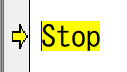

VBEの使い方：ツールのオプション設定
VBE(Visual Basic Editor)はVBAで使われるコードエディタ、コンパイラ、デバッガ、その他の開発支援ツールが統合された開発環境です。
ここではVBEの環境設定となる、ツールのオプション設定について説明します。
一つには、
Ifステートメント、Forステートメント等々、VBAの基本ステートメントの単語そのもの。
もう一つは、
通常改行する単位の1行全体で「For i = 1 To 10」この1行全体をさしている場合。
適宜、文章の流れから読み分けてください。
編集
コードの設定
1ステートメント確定時（Enterやカレント行をずらした時）に、都度文法チェックを行うかどうかの指定です。
チェックを付けておくと、確定されたそのステートメントを都度チェックを行い、
構文エラー（赤字エラー）があると、警告メッセージが表示されます。
古いエクセルのバージョンでは初期でチェックが付いていましたが、
最近のバージョンでは初期でチェックが外れています。
新規にモジュール作成時、自動的にモジュールの先頭に、
Option Explicit
これが挿入されるようになります。
しかし、VBAでは変数宣言は強制しましょう。
第12回.変数とデータ型（Dim）
オブジェクトに続けて.（ビリオド）を入力した時に、
オブジェクトのメンバーが入力候補として表示されます。
オブジェクトのプロパティやメソッドそして関数の入力時に、
どのような引数になっているかのヒントが表示されます。
VBAをステップ実行(F8)やデバッグ等で一時停止しているとき、
マウスポインタを、変数やプロパティに合わせる（その上で停止させる）事で、
その中身の値をヒント表示されます。
直前の行の先頭と同じ位置まで自動でインデントされるようになります。
初期は4となっています。
たまに2で使っている人もいるようですが、初期の4がお勧めです。
ウィンドウの設定
VBAコードの選択部分をドラッグ アンド ドロップで移動できるようになります。
イミディエイト ウィンドウや、ウォッチ ウィンドウへのドラッグで使用します。
モジュール内の全てのプロシージャーが連続で表示されるようになります。
モジュール全体を連続表示した場合に、プロシージャー間に区分線が表示されます。
エディターの設定
前景は、文字色です。
背景は、文字の背景です。
インジケーターは、コードの左の縦のグレー部分（）下の画像では右矢印部分


コードの無い行の背景もここでの指定になります。
次に実行されるステートメントです。
このステートメントはまだ実行されておらず、次に(F8等で進めた時に)実行されます。

下図で、分かりやすいようにピンク背景にした部分になります。
（もちろん、こんな色の設定をする櫃はいません）
下図で、分かりやすいようにピンク背景にした部分になります。
（もちろん、こんな色の設定をする櫃はいません）
その呼び出し元のプロシージャーになります。
この設定は、インジケーターに対してのみ有効です。
全般
コントロールをドラッグで配置した時に、グリッドに合わせるかどうかの指定になります。
Endステートメントや「デバッグ」で終了しない限り、値を保持しています。
そもそもモジュールレベル変数の記述を変更をした場合は、
変数が変更になるので、保持していた値は破棄されます。
このような編集によりモジュールレベル変数の値が破棄される場合に通知するかどうかの指定になります。
上記のsample1を実行した後に、
Public Hoge, Fuga
このように編集すると、以下のメッセージが表示されます。
使用中の変数を変更するような編集を行った場合は、常にメッセージが表示されます。
全てのモジュールが対象になります。
On Errorがあるために、本来のエラー発生個所の特定に窮する場合が出てきます。
そのような場合に、ここにチェックを付けることで、
On Errorにかかわらず、エラー発生箇所で中断させることができます。
具体的にはOn Error対象外という事です。
On Errorの制御範囲であればそれに従い、
On Errorの制御範囲外では中断する指定になります。
ドッキング
ここでチェックの付いているウィンドウはドッキングさせることができます。
一度切り離してしまったウィンドウをドッキングさせる場合の操作には、若干の慣れが必要です。
VBE全体の上下左右の好きな位置に配置できますが、
一般的な初期状態が使いやすいのではないで使用か。
また、境界腺をドラッグすることで、大きさも変えることができます。
ツールのオプション設定の最後に
これ以外は適宜変更して構いませんが、基本的には初期状態のまま使う事をお勧めします。
ただし、
エディタの設定については、本当に個々人の好みになってきます。
目に良いとか格好良いという理由で、黒背景にしている人も多くいるようです。
特にフォントサイズは、画面の解像度とも関係しますので、適宜見やすい大きさに変更してください。
同じテーマ「マクロVBA入門」の記事
VBEの使い方：VBE画面の全体説明
VBEの使い方：ツールのオプション設定
VBEの使い方：ツールバー
VBEの使い方：右クリックメニューとヘルプ
VBEの使い方：ショートカットキーとコード編集
VBEの使い方：イミディエイト ウィンドウ
VBEの使い方：ローカル ウィンドウ
VBEの使い方：ウォッチ ウィンドウ
VBEの使い方：オブジェクト ブラウザー
VBEの使い方：デバッグ
新着記事NEW ・・・新着記事一覧を見る
VBA100本ノック 100本目：WEBから100本ノックのリストを取得｜VBA練習問題（3月3日）
VBA100本ノック 99本目：自動席替え（行列と前後左右が全て違うように）｜VBA練習問題（3月2日）
VBA100本ノック 98本目：席替えルールが守られているか確認｜VBA練習問題（3月1日）
VBA100本ノック 97本目：Accessデータを取得（グループ集計）｜VBA練習問題（2月27日）
VBA100本ノック 96本目：Accessデータを取得（マスタ結合&抽出）｜VBA練習問題（2月26日）
VBA100本ノック 95本目：図形のテキストを検索するフォーム作成｜VBA練習問題（2月24日）
VBA100本ノック 94本目：表範囲からHTMLのtableタグを作成｜VBA練習問題（2月23日）
VBA100本ノック 93本目：複数ブックを連結して再分割｜VBA練習問題（2月22日）
VBA100本ノック 92本目：セルの色を16進で返す関数｜VBA練習問題（2月20日）
VBA100本ノック 91本目：時間計算（残業時間の月間合計）｜VBA練習問題（2月19日）
アクセスランキング ・・・ ランキング一覧を見る
1.最終行の取得（End,Rows.Count）｜VBA入門
2.RangeとCellsの使い方｜VBA入門
3.変数宣言のDimとデータ型｜VBA入門
4.マクロって何？VBAって何？｜VBA入門
5.Range以外の指定方法（Cells,Rows,Columns）｜VBA入門
6.セルのコピー&値の貼り付け（PasteSpecial）｜VBA入門
7.繰り返し処理（For Next)｜VBA入門
8.セルに文字を入れるとは（Range,Value）｜VBA入門
9.マクロはどこに書くの（VBEの起動）｜VBA入門
10.とにかく書いてみよう（Sub,End Sub）｜VBA入門
このサイトがお役に立ちましたら「シェア」「Bookmark」をお願いいたします。
記述には細心の注意をしたつもりですが、
間違いやご指摘がありましたら、「お問い合わせ」からお知らせいただけると幸いです。
掲載のVBAコードは動作を保証するものではなく、あくまでVBA学習のサンプルとして掲載しています。
掲載のVBAコードは自己責任でご使用ください。万一データ破損等の損害が発生しても責任は負いません。